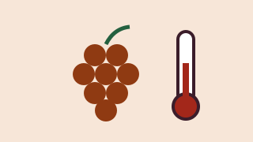

Final report
The stations recorded two heatwaves and one hailstorm. We published a free guide for winegrowers.
Weather stations in vineyards and grape analysis to help winegrowers adapt to the heat.
VitiClima group · Department of Agricultural, Forest and Food Sciences, University of Turin
Principal investigator: Giovanni Cravero

Ever earlier harvests and sudden hailstorms: the vineyards of Monferrato and Asti must adapt too.
The VitiClima group installed weather stations in 12 family-run vineyards and compared the data with grape quality, to give practical advice on pruning and grass management.
| Budget item | Amount |
|---|---|
| Vineyard weather stations | €2,600 |
| Grape analysis | €2,400 |
| Drone surveys (rental) | €1,200 |
| Meetings with winegrowers | €800 |
| Total (goal) | €7,000 |
The campaign is closed: rewards can no longer be chosen. Below you can see how many people chose each one.
The stations recorded two heatwaves and one hailstorm. We published a free guide for winegrowers.
Comments are published in the language they were written in.
Mauro P. · · Comment in Italian
Viticoltore a Nizza Monferrato: ci servono proprio questi dati.
Some of the supporters who chose to show their name:
Elisa G., Alessandro Z., Anna R., Roberto V., Federica O., Marco B., Silvia P., Simone L. and 110 more people, some anonymous.